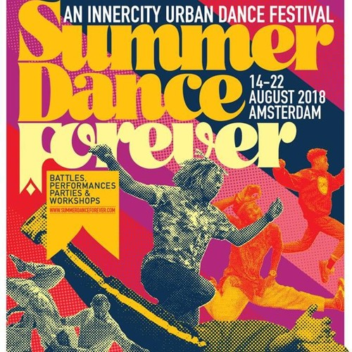

DLACZEGO TANIEC
Chciałbym przybliżyć nieco w tej pracy powód mojego zaangażowania i fascynacji tańcem Hip Hop i innymi stylami ulicznymi, jaki i w zasadzie tańcem w ogóle.
Gdy miałem pięć lat, rodzice posłali mnie na mój pierwszy trening w grupie otwartej. Zdecydowali się na to, bo uważali, że mimo wczesnego wieku, wykazywałem już poczucie rytmu. Po zdobyciu odpowiedniego doświadczenia, rozpocząłem przygodę w zespołach dziecięcych. Gwoli ścisłości: "zespół" oznacza w Polsce grupę zamkniętą, do której trzeba otrzymać awans, czy też zostać zrekrutowanym. Takie zespoły startują w turniejach w takich kategoriach jak: formacja, solo, duet czy miniformacja. Będąc w zespole dziecięcym miałem okazję poznać wielu inspirujących tancerzy, poznawać ogrom i wszechstronność tańca, jak i zdobywąć doświadczenie fizyczne i mentalne, spędzając tysiące godzin na salach tanecznych i halach turniejowych.
Kiedy osiągnąłem należyty wiek lat dwunastu, awansowałem do zespołu juniorskiego. Był to niejaki przeskok mentalny, do którego trzeba było przywyknąć. Pomogła mi w tym otwartosc ludzi środowiska tanecznego. To naprawdę niesamowite jak różnorodni, a zarazem wyrozumiali mogą być to ludzie. Od tamtego momentu jako zespół stawalismy na podium lub nawet wygrywaliśmy Mistrzostwa Polski, Europy i Świata. Chwytalismy się też parę razy tak zwanych turniejów ulicznych. Ponownie, gwoli ścisłości: ich nazwa wynika z faktu, iż tancerze nie tańczą tam na wielkich scenach na przeciwko trybun, lecz na stosunkowo niewielkiej przestrzeni, pośrodku tłumu ludzi. Jest to kompozycja, czy też konfiguracja charakterystyczna właśnie dla tanecznych wydarzeń odbywających się na ulicach miast i miasteczek. Atmosfera na takich turniejach jest absolutnie niepowtarzalna. Wszyscy czują swoją obecność w społeczności ludzi, którzy kochają taniec i dzielenie się nim z innymi. Członkostwo w zespole juniorskim otwiera również bardzo głowę na style całkowicie odmienne od Hip Hopu. I to jest coś pięknego. Tanczerz nie ma granic, podobnie jak taniec, który można w nieskończoność odkrywać i poszerzać.
